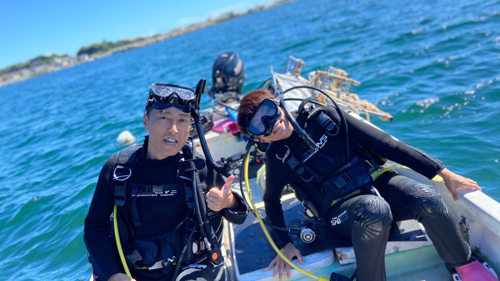

失敗しないダイビングスクールの選び方
神奈川でスクールを探すとき、必ずチェックしたい5つの基準。
三浦 海の学校はすべてをクリアしています。
認定団体のランク
PADI等の世界的な認定団体から、どのレベルの認定を受けているか。ランクが高いほど指導の質と実績が保証されます。
PADI最高位 5スターIDC専用プールの有無
いきなり海では不安。専用プールで基礎スキルを身につけてから海洋実習に進めるかどうかは大きな差です。
水深3.5m 専用プール完備アクセスの良さ
通いやすさは継続の鍵。講習だけでなく、その後のファンダイビングも見据えた立地選びが大切です。
都心60分・無料送迎あり少人数制の指導
大人数の講習では一人ひとりへの目配りが難しくなります。少人数制なら自分のペースで確実にスキルを習得できます。
最大6名の少人数制取得後のサポート
ライセンス取得はスタートライン。ファンダイビングやステップアップコースが充実しているかも重要な判断基準です。
全PADIコース開講三浦 海の学校の特長
5つの基準をすべてクリアした、神奈川県三浦市のダイビングスクールです。

PADI 5スターIDCセンターとは
PADIが認定する最高位のダイビングスクールランク。高品質な指導、充実した施設、幅広いコース開講が認められた証です。インストラクターの養成まで行える、神奈川県内でも希少な施設です。

専用プール完備
水深3.5mの本格的なダイビングプールを施設内に完備。海に出る前に十分な練習ができるため、泳ぎが苦手な方やシニアの方も安心。プールから海まで移動なしで効率的に講習を進められます。

少人数制＆コースディレクターが指導
最大6名までの少人数制。インストラクターを養成するPADIコースディレクターが直接指導します。12冊以上の著書を持つ代表が主宰する、信頼と実績のスクールです。

ライセンス取得後も充実のサポート
取得後はファンダイビングで三浦の海を楽しめます。アドバンスやスペシャルティなどのステップアップコースも充実。一生のダイビングライフを応援します。
提供コース一覧
初心者からプロフェッショナルまで、あらゆるレベルに対応したコースをご用意。
横須賀・横浜方面からのアクセス
神奈川県内はもちろん、東京からも好アクセス。三崎口駅からは無料送迎あり。
三崎口駅から無料送迎（要予約）
お客様の声
横浜在住ですが、京急一本で通えるのが決め手でした。専用プールで練習できるスクールは神奈川でも少ないので、初心者には本当にありがたい環境です。3日間であっという間にライセンス取得できました！
横須賀から電車で20分程度なので、ライセンス取得後もファンダイビングに通い続けています。季節ごとに違う生き物に出会えるのが楽しみ。少人数なのでいつもやさしく教えてもらえます。
定年を機にダイビングを始めました。年齢的に不安でしたが、コースディレクターがやさしくレクチャーしてくれて安心でした。妻と一緒に海中散歩を楽しんでいます。
よくある質問
ダイビングスクールを選ぶときのポイントは？
初心者でも大丈夫ですか？
PADI 5スターIDCセンターとは何ですか？
横浜・横須賀方面からのアクセスは？
ライセンス取得後もサポートはありますか？
年齢制限はありますか？
まずはお気軽に
ご相談ください
コース選びから日程の相談まで、
スタッフがやさしくお答えします。
神奈川のダイビングスクール — 三浦 海の学校
神奈川県でダイビングスクールをお探しなら、三浦市のPADI公認5スターIDCセンター「三浦 海の学校」にお任せください。体験ダイビングからPADIオープンウォーターダイバー、アドバンスドオープンウォーターダイバー、レスキューダイバー、さらにはプロフェッショナルコース（ダイブマスター・インストラクター養成IDC）まで、すべてのレベルのコースを開講しています。
当スクールの最大の特長は、水深3.5mの専用ダイビングプールを施設内に完備していること。海に出る前に十分な練習ができるため、泳ぎが苦手な方、水が怖い方、シニアの方でも安心してダイビングを始められます。少人数制（最大6名）で、PADIコースディレクターが一人ひとりに合わせてやさしくレクチャーします。
アクセスも抜群です。品川から京急線で約60分、横浜から約45分、横須賀中央から約21分。三崎口駅からの無料送迎サービスもあり、車がなくても通いやすい環境です。神奈川県内（横浜・川崎・横須賀・藤沢・鎌倉・茅ヶ崎）はもちろん、東京都内からも多くの方にお越しいただいています。
ライセンス取得後は、三浦半島の豊かな海でファンダイビングをお楽しみいただけます。四季折々の生き物に出会える三浦の海で、一生もののダイビングライフを始めませんか。まずはお気軽にお問い合わせください。